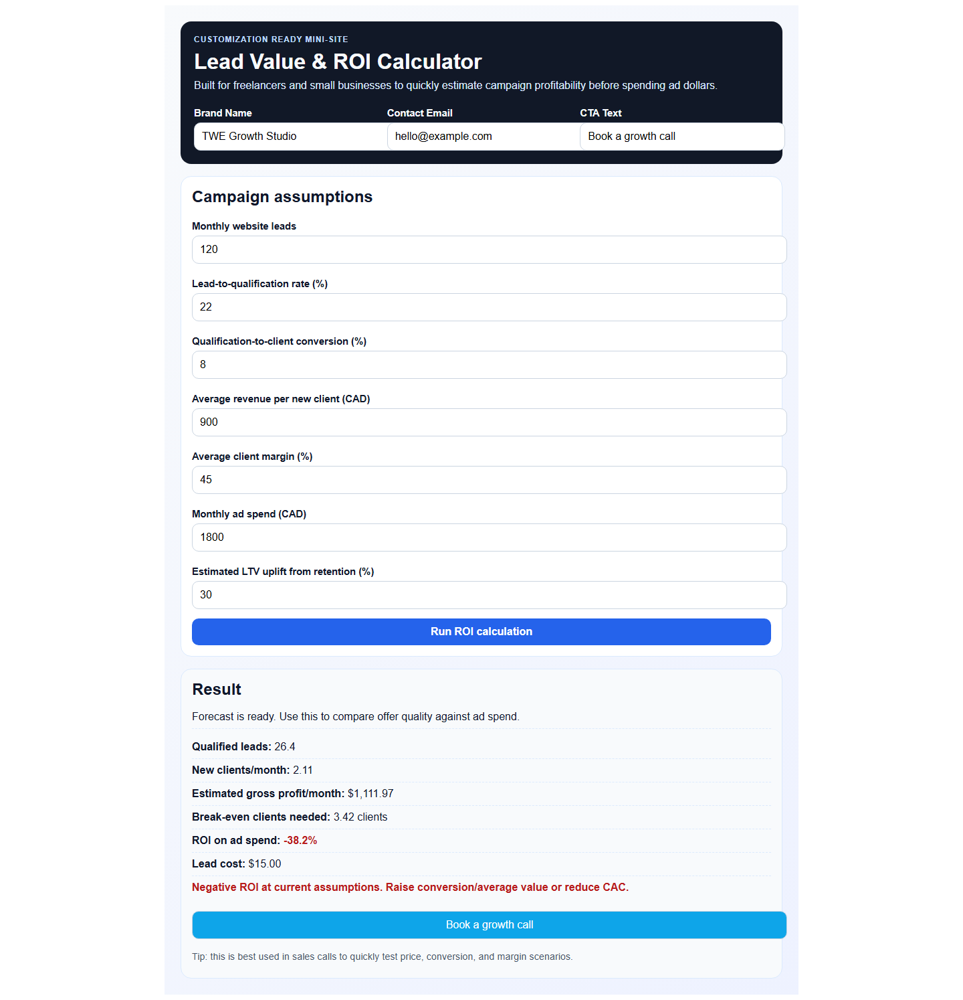

Ad spend + lead quality proof
Lead Value & ROI Calculator
A static calculator that turns lead flow, close rates, margins, and ad spend into a clear profit forecast for service providers.
Live product proof for buyers
Each card below links to an actual static deliverable. The screenshots show the product in use so customers can see what they are buying before they click.

Ad spend + lead quality proof
A static calculator that turns lead flow, close rates, margins, and ad spend into a clear profit forecast for service providers.

Fast quoting for service businesses
A branded quote-builder mini-site for cleaners, landscapers, movers, electricians, and other local operators that need faster estimates.

Client-ready diagnostic offer
A lightweight scorecard that helps freelancers and agencies show a buyer what needs fixing before a full web project starts.
Every gig card uses a captured output state, not a generic title-only graphic.
Each mini-site is linked from this Vercel deployment and can be opened directly.
The gigs are HTML/CSS/JS deliverables with ZIP packages already prepared in the repo.
{kind=link}
{kind=link}
{kind=link}